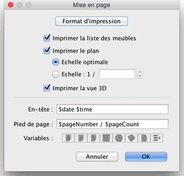
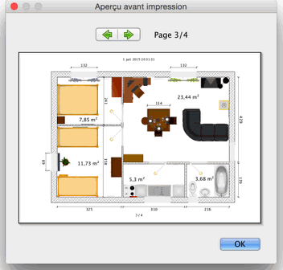

| Impression d'un logement | |||
Pour imprimer un logement, choisissez Fichier > Imprimer.... Par défaut, Sweet Home 3D imprime la liste des meubles, le plan et la vue 3D en cours d'un logement, en utilisant
la taille de papier, les marges et l'orientation par défaut.  Dans le panneau de mise en page, vous pouvez modifier la taille et l'orientation du papier en cliquant
sur le bouton Format d'impression.
Vous pouvez choisir aussi si la liste des meubles, le plan et la vue 3D d'un logement
seront imprimés ou non. Si vous ne voulez pas utiliser l'échelle calculée automatiquement pour
remplir une page, vous pouvez choisir une autre échelle dans le champ de saisie Echelle.
Pour vous éviter de saisir le nom exact d'une variable, utilisez les boutons Variables affichés sous les champs de saisie En-tête et Pied de page. Comme le signe $ est réservé pour les variables, utilisez le code $$ si vous voulez imprimer un signe $ dans le texte en-tête ou en pied de page. Pour prévisualiser votre mise en page à l'écran, choisissez Fichier > Aperçu avant impression....  Dans le panneau d'aperçu avant impression, vous pouvez voir comment un logement sera imprimé page par page. Pour passer d'une page à l'autre, cliquez sur les flèches en haut du panneau ou utilisez les flèches du clavier. |
|